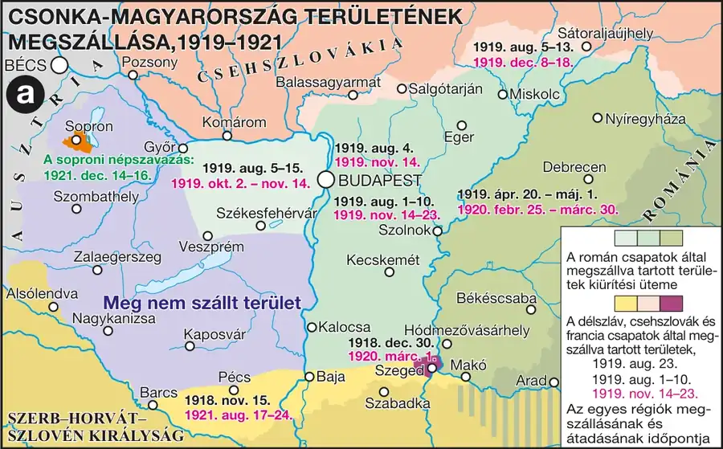

Az átmeneti kormányok és Horthy bevonulása
A Tanácsköztársaság bukása után, a román megszállás idején, átmeneti kormányok következtek: Peidl Gyula „szakszervezeti kormánya” (1919. aug. 1–6.) elkezdte a tanácsrendszer lebontását, majd Friedrich István kormánya (aug. 6. – nov. 24.) alatt román felügyelet mellett megtisztították a politikai életet a kommunistáktól. Horthy Miklós, a Nemzeti Hadsereg vezetője tárgyalt az antant megbízottjával, majd 1919. november 16-án bevonult Budapestre. Huszár Károly kormánya (nov. 24. – 1920. márc. 10.) elküldte a magyar küldöttséget a békekonferenciára.
A királyság visszaállítása és a kormányzóválasztás
Magyarország 1920-ban visszatért a királyság államformájához (1920. évi I. tc.). Államfővé, kormányzóként, ideiglenes jelleggel — a királyt helyettesítendő — 1920. március 1-jén Horthy Miklóst választották meg. 1920 szeptemberében fogadták el a numerus clausus törvényt, amely korlátozta a zsidó származású fiatalok egyetemi felvételét. Miután Habsburg IV. Károly kétszeri visszatérési kísérlete (királypuccsok, az utóbbi 1921. október 20–23-án) is kudarcba fulladt, nemzetközi nyomásra sor került a Habsburg-Lotaringiai-ház detronizációjára (1921. évi XLVII. tc.) — így Magyarország egy király nélküli királysággá vált.
Fontos megkülönböztetés: Horthy Miklós nem királyként, hanem ideiglenes jelleggel megválasztott kormányzóként töltötte be az államfői tisztséget — Magyarország hivatalosan királyság maradt, de a trónt nem töltötték be; ezt az egyedi berendezkedést nevezik „király nélküli királyságnak”.
| Fogalmak | Személyek | Kronológia | Topográfia |
|---|---|---|---|
| legitimizmus E; numerus clausus E | — | 1921 a Habsburg-ház trónfosztása E | — |
Csonka-Magyarország területének megszállása, 1919–1921
A román, csehszlovák, délszláv és francia megszállás, a csapatkivonások üteme, valamint a soproni népszavazás térbeli összefüggései vizsgálhatók.

1. forrás — A numerus clausus törvény (1920, tartalmi kivonat)
A törvény szövege szerint az egyetemi felvételi eljárás során figyelembe kell venni a jelentkező nemzethűségét és erkölcsi megbízhatóságát, és a nemzetiségi és felekezeti arányoknak megfelelően kell szabályozni a felvehető hallgatók összetételét. A törvény gyakorlati alkalmazása a zsidó származású fiatalok egyetemi bejutását korlátozta erőteljesen, számukat a korábbi arányukhoz képest jelentősen csökkentve.
a) Milyen szempontokat írt elő a törvény az egyetemi felvételinél?
b) Kiket sújtott a törvény gyakorlati alkalmazása leginkább?
c) Milyen elvi indoklással próbálták igazolni a korlátozást?
Ellenőrző feladatok
Állítás: Horthy Miklós 1920-ban Magyarország királyává koronáztatta magát.
Mikor választották meg Horthy Miklóst kormányzóvá?
Egészítsd ki: A második sikertelen ______ (Habsburg IV. Károly visszatérési kísérlete) után nemzetközi nyomásra detronizálták a Habsburg-házat.